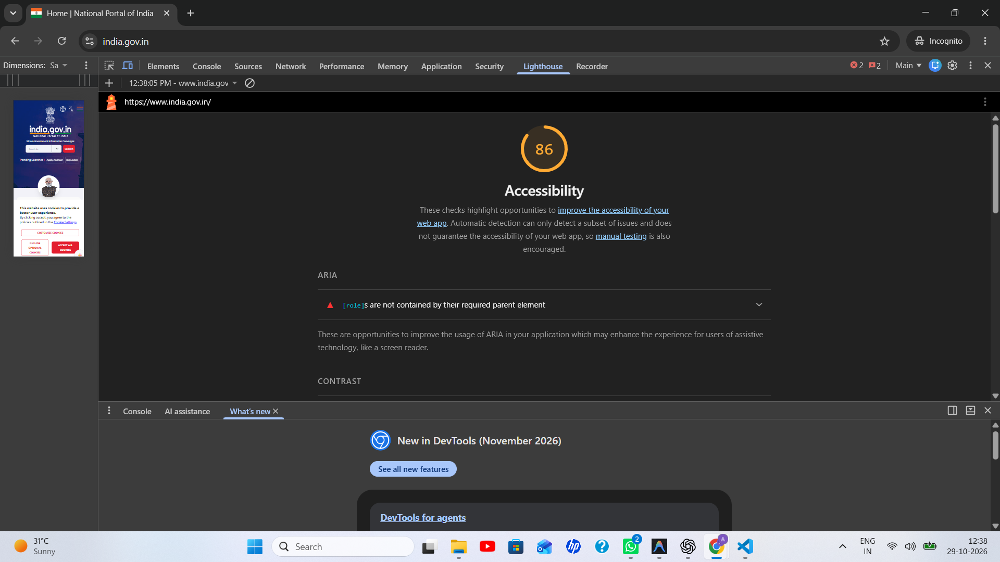
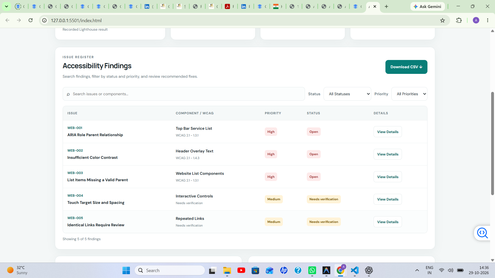
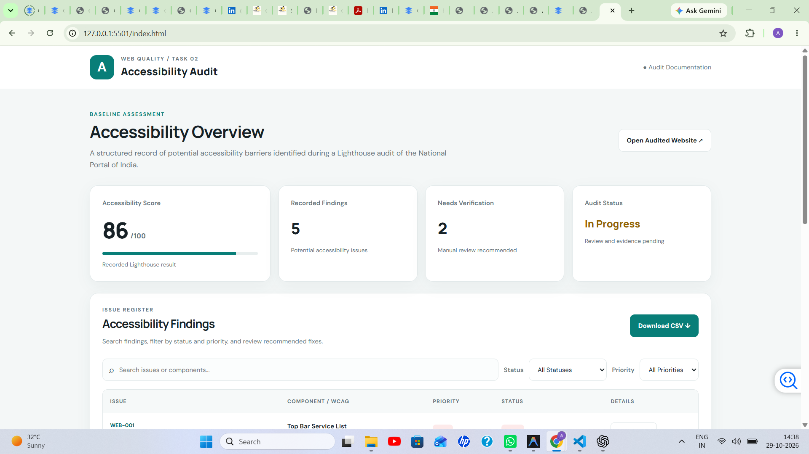
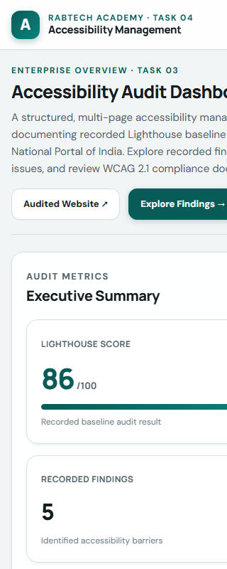
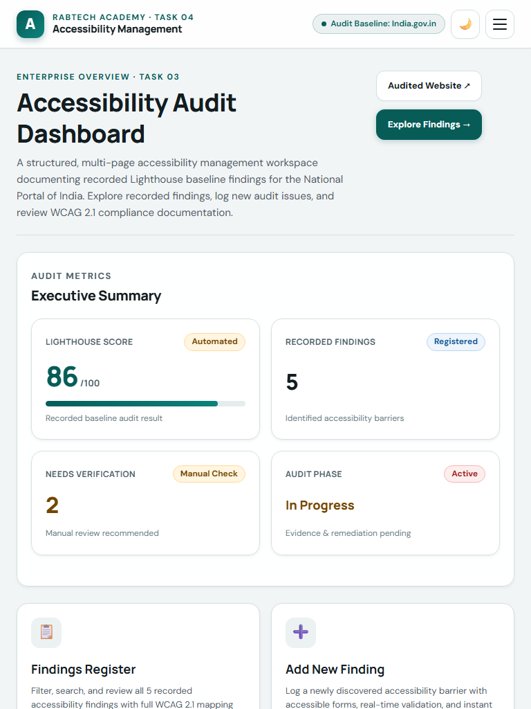
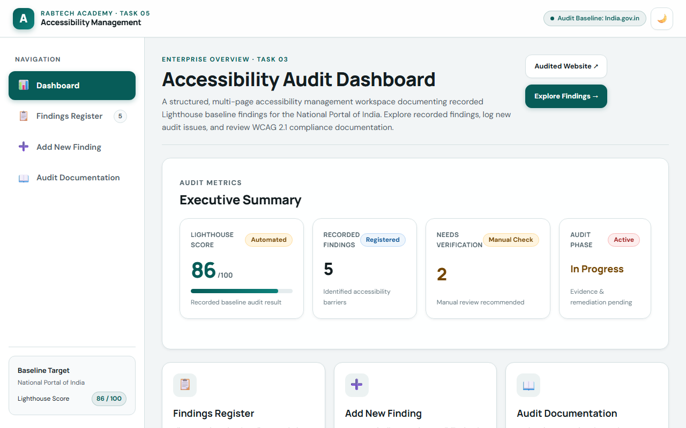

Audited Target
National Portal of India
URL: https://www.india.gov.in/ ↗
Scope: Primary landing page and top navigation services.
RabTech Academy · Task 05
Accessibility ManagementTechnical Reference · Task 03
Comprehensive technical specifications, WCAG 2.1 Level AA mapping, automated Lighthouse scan parameters, and manual keyboard testing protocols for the National Portal of India.
This accessibility assessment was conducted as part of the RabTech Academy Internship (Task 03: Semantic HTML5 & Accessible Component Architecture). The objective is to audit the digital accessibility posture of a public government portal, record baseline findings, and establish a professional accessibility management dashboard.
National Portal of India
URL: https://www.india.gov.in/ ↗
Scope: Primary landing page and top navigation services.
86 / 100 (Lighthouse Accessibility)
Engine: axe-core via Chrome DevTools Lighthouse.
Assessment: In Progress (Manual verification pending).
W3C WCAG 2.1 Level AA
Four core principles: Perceivable, Operable, Understandable, and Robust (POUR).
A balanced, enterprise accessibility audit combines automated scans with rigorous manual testing. Automated auditing tools reliably flag deterministic structural violations, but cannot evaluate context, reading order, screen reader pronunciation, or user task flow.
role="listitem" without role="list").aria-live.The recorded Lighthouse audit of India.gov.in produced 5 initial baseline findings across 3 WCAG principles. Below is the technical breakdown:
Component: Top Bar Service List (div#topBarServiceList).
Root Cause: Elements assigned role="listitem" were not contained within an element with role="list".
Remediation: Replace customized ARIA divs with native semantic <ul> and <li> elements, or provide the required role="list" container.
Component: Header Overlay Text ('Avail online Services & Save time').
Root Cause: Text overlay lacked sufficient contrast ratio against the background imagery or banner gradient.
Remediation: Darken text or apply a solid background scrim to achieve at least 4.5:1 contrast for normal text.
Component: Website List Components.
Root Cause: List items (<li>) were rendered without direct <ul>, <ol>, or <menu> parent elements.
Remediation: Enclose all list items within proper semantic list container tags.
Component: Interactive Controls.
Root Cause: Flagged controls had active touch targets under 48x48 CSS pixels or insufficient spacing.
Remediation: Expand hit area padding and ensure at least 8px separation between adjacent clickable controls.
Component: Repeated Links.
Root Cause: Multiple links on the page share identical accessible names but navigate to different destinations.
Remediation: Provide unique, context-descriptive link labels or use visually hidden text to disambiguate destinations.
Visual evidence captured during the Chrome DevTools Lighthouse audit of the National Portal of India:



This dashboard architecture implements best practices for semantic HTML5 and accessible web components:
<header>: Top-level branding and global application controls.<nav>: Primary and sidebar navigation with explicit aria-label and aria-current="page".<aside>: Responsive sidebar navigation landmark.<main id="main">: Primary content landmark accessible via skip link.<footer>: Consistent application footer with quick links and attribution.<dialog> with focus trap, Escape key listener, and focus restoration to trigger elements.<fieldset>, <legend>, explicit labels, error summary box with role="alert", and live success banners.Task 04 upgrades the system to a mobile-first responsive architecture powered by CSS custom properties (design tokens), adaptive breakpoints (320px, 768px, 1024px, 1440px), and persistent dark/light theme switching:
--text-xs through --text-4xl) and 8pt/4pt spacing grid tokens (--space-1 through --space-16).[data-theme="dark"] palette, system preference detection, and persistent localStorage synchronization.

